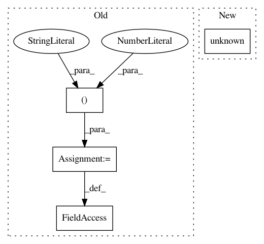

fecfbbbe8965b33b7ebee28bc2bdc5e85197b21e,tests/test_cli.py,,test_get_prev_state,#,325
Before Change
GetData._get_prev_state(endpoint)
endpoint.p_prev_state = ("queued", 1551711126)
GetData._get_prev_state(endpoint)
endpoint.p_prev_state = ("queued", 1551711827)
GetData._get_prev_state(endpoint)
def test_get_history():
After Change
endpoint.p_prev_state = None
prev_state = GetData._get_prev_state(endpoint)
assert prev_state == NO_DATA
endpoint.unknown()
GetData._get_prev_state(endpoint)
endpoint.queued()
GetData._get_prev_state(endpoint)
endpoint.queued()
In pattern: SUPERPATTERN
Frequency: 3
Non-data size: 4
Instances
Project Name: CyberReboot/poseidon
Commit Name: fecfbbbe8965b33b7ebee28bc2bdc5e85197b21e
Time: 2020-11-23
Author: josh@vandervecken.com
File Name: tests/test_cli.py
Class Name:
Method Name: test_get_prev_state
Project Name: CyberReboot/poseidon
Commit Name: fecfbbbe8965b33b7ebee28bc2bdc5e85197b21e
Time: 2020-11-23
Author: josh@vandervecken.com
File Name: tests/test_cli.py
Class Name:
Method Name: test_get_last_seen
Project Name: CyberReboot/poseidon
Commit Name: fecfbbbe8965b33b7ebee28bc2bdc5e85197b21e
Time: 2020-11-23
Author: josh@vandervecken.com
File Name: tests/test_cli.py
Class Name:
Method Name: test_get_first_seen